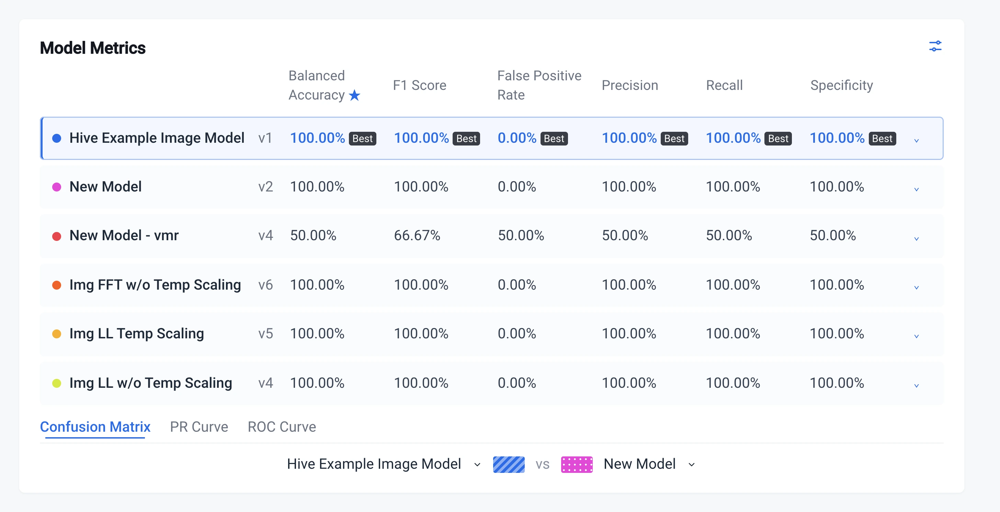
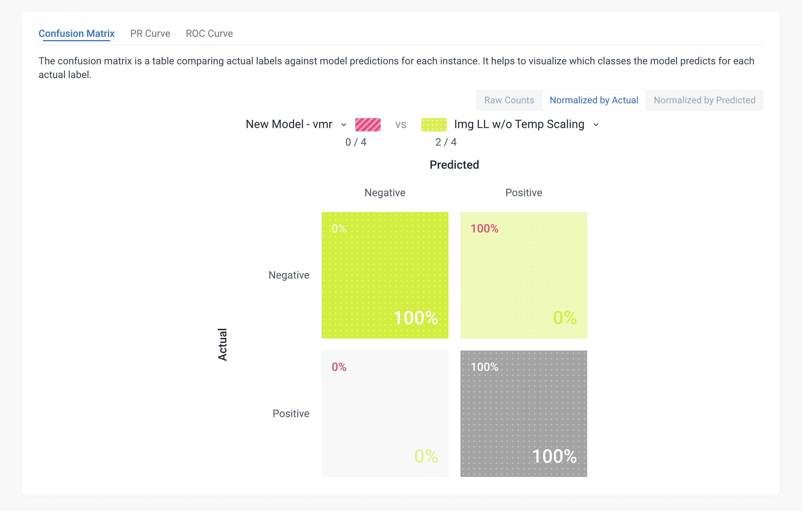
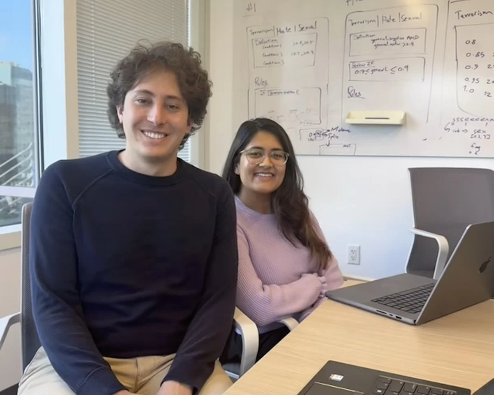

Which model wins? Turning AutoML's confusing leaderboard into evaluations people can trust
Overview
Six models. Five score 100% on everything. One gets every “Best” badge, and the page never says why.
Hive AutoML lets teams train image and language models without code. Once you've trained a few, you need to know which one to ship. The Compare Models page was supposed to answer that, but it showed a wall of numbers and no way to decide between them.

- Every metric on the first row says Best, but four other rows score exactly the same.
- The star next to Balanced Accuracy doesn't say what it means.
- The control for choosing metrics is an unlabelled icon, and for object detection it starts with no metrics at all.

- Both models share one grid: one model's number sits in each cell's top-left corner, the other's in the bottom-right.
- Where the two colours overlap they blend into grey, so you can't tell which model a shade belongs to.
- “0 / 4” and “2 / 4” sit under the models with no label saying what they count.
- The colour swatches sit on opposite sides of the names, and the tiny arrows are the only way to switch models.
I was the only designer on it. I redesigned it around Evaluations: each one is a run you can read, trace and compare side by side. It shipped in August 2025.
Research
Two people ask “which one wins?” for different reasons.
I interviewed Alberto, turned what I heard into two personas, and took apart how four competitors handle comparisons.
Research board

User interview
With Alberto
We talked through how comparing models in AutoML really goes, from picking runs to deciding which one to ship.
Ivy Warren
Marketing Analytics Manager · Toronto
Medium tech literacy“I don't need to know how the model works. I just need to know what to do next.”
Needs
- Clear guidance on what model results mean
- Business-friendly visuals and summaries
- Shareable reports for decision-makers
Frustrations
- Confusing metrics like log loss or AUC
- Hard to tell which model is active, and why
- Hard to interpret or trust predictions
Dane Williamson
Product Manager, AI/ML · New York
High tech literacy“I need AutoML to be fast, flexible, and explainable, not just ‘easy.’”
Needs
- Compare models on business KPIs
- Track model versions and performance
- Explainable outputs for stakeholders
Frustrations
- Unclear model comparison tools
- No view of how settings change outcomes
- Simple UIs that limit advanced use
Vertex AI
Rich metrics, and TensorBoard to track them over time.
Comparing confusion matrices means juggling tabs, and it assumes deep Google Cloud know-how.
Dataiku
You crown a “champion model”, so a comparison ends in a decision.
Confusion matrices are compared by hand, never side by side.
BigML
Overlaid ROC and PR curves, and side-by-side matrices.
So much freedom it overwhelms, and it's hard to scope a comparison to one dataset.
Weights & Biases
Not a competitorLogs each run's settings next to its scores, so you can see why it won.
The bar I measured the gap against.
The gap
None of the three shows which settings changed between runs.
You can see that one model won, but not why. That's where AutoML could stand out.
| Setting | Run A | Run B |
|---|---|---|
| Epochs | 10 | 20 |
| Batch size | 32 | 32 |
| Learning rate | 0.001 | 0.0005 |
Google's post on the Vertex AI Model Registry gave me the backbone: evaluation belongs to a model's versioned history.
The insightPeople weren't comparing models. They were comparing runs: one model, one snapshot of data, one set of settings. That run needed a home.
The redesign
Evaluations: every result can be read, traced and compared.
Try it. Tick two evaluations and compare them, click any evaluation name to open its results, then open Evaluation info to see the settings behind it.
Pick: balanced accuracy and status on every row. Tick any two, then Compare Evaluations.
No mystery badges
Ties are visible, so “Best” went. The table shows every number and lets you read it.
Every metric explains itself
A plain definition, and whether higher or lower is better, sits right where you read the number. That's for Ivy.
Every result is traceable
Settings, prompt, data, speed and cost live on the evaluation. That's for Dane.
Compare like with like
You pick from a short list of finished evaluations, with the version beside each name.
Impact & reflection
From “Best… at what?” to a comparison you can defend.
Evaluations shipped to production in August 2025 and replaced Compare Models as the way AutoML customers check and compare models. It is still live in Deploy AutoML today.
“Which one wins?”
1 table
Every metric on by default and ties in plain sight, instead of six “Best” badges on one tied row.
“What does it mean?” · Ivy
6 of 6
Metrics explain themselves in plain words, and say whether higher or lower is better.
“Why did it win?” · Dane
1 tab away
The prompt, data and all 9 run settings behind every result.
A label is a promise
“Best” looked helpful and meant nothing. Now I check what every badge, star and icon is claiming.
Find the real object
The fix wasn't a better comparison screen. It was seeing that people compare runs, not models.
What's next
Highlight the settings that differ between two evaluations right in Compare, so you see why one won without opening each run.